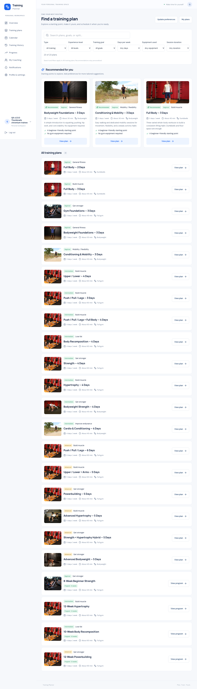
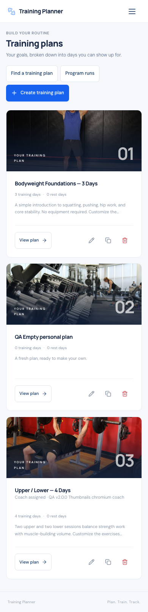
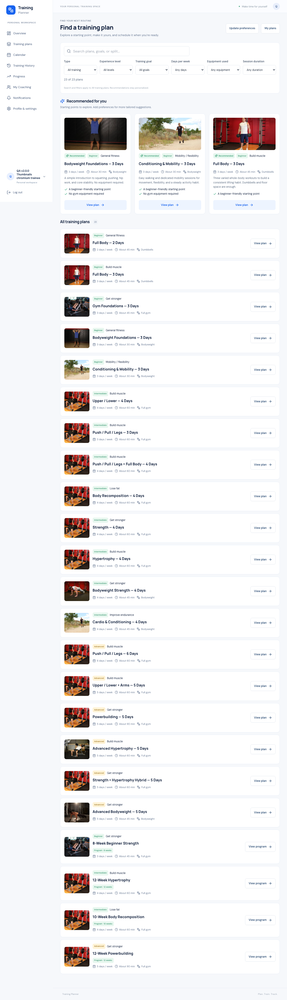
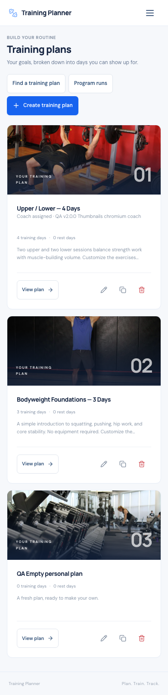

Training Planner · 1 November 2026
v2.3.5 — Plan thumbnails
READY — DEPLOYED AND VERIFIED
Photos make training plans easier to recognize across personal
and Coach plan lists, recommendations and the complete catalog.
What changed
My Plans, Coach templates, assigned training lists, Recommended
cards and all catalog rows now show thumbnails. Existing plans
use the first available exercise image in training-day/exercise
order; catalog plans use their first exercise image. Empty plans
and failed image requests use the existing gym photo.
Cards retain their labels, actions and responsive layout. The
mobile View plan button also remains readable instead of
collapsing into wrapped letters.
This update automatically selects covers from existing media. It
does not add a custom plan-cover upload field. Some plans share
a cover when their first exercise is the same.
Implementation and privacy
One shared React thumbnail component handles lazy loading,
sizing and missing-image fallback. Plan lists obtain one image
path through a correlated subquery, without loading every
exercise or adding one query per card. Existing Coach ownership
and trainee-assignment scopes remain authoritative.
No migration, dependency, authentication, scheduling or workout
changes. Existing media attribution is preserved.
Verification
613 tests and 12,052 assertions passed on both SQLite and
isolated MySQL; 38 JavaScript tests passed. Chromium and WebKit
passed 122 checks covering thumbnails, image failures, privacy
and the existing full workout/program lifecycle. Twelve HTTP
checks verified catalog and scoped cover data.
Responsive checks covered 320 × 480, 360, 375, 390, 430, 768 and
1280 widths. No physical phone test is claimed. Production
build, Pint, Prettier, Composer validation/audit and diff checks
passed.
Local cleanup removed eight disposable accounts and 238
generated images. All original fingerprints across 22 tables and
44 media files matched.
Machine-readable verification
Desktop discovery

Mobile plans

Release and deployment
READY — DEPLOYED AND VERIFIED. Production moved from verified
v2.3.4 to immutable v2.3.5 commit
f5d7a1ae7bd6096eb73f56f193c62221d1b1c1d3. The
source and annotated tag were pushed without changing earlier
tags. This evidence is recorded in a documentation-only
follow-up commit.
Fresh database, runtime, uploads and environment backups were
verified before replacement. The immutable tag was exported and
rebuilt in a separate release directory. 76 patch files were
deployed; all 7,456 origin file hashes verified. All 404 public
assets verified: 400 exact HTTP hashes and 4 CDN-reencoded PNGs
with identical decoded pixels.
Live Chromium and WebKit passed 107 checks across plan
thumbnails, responsive layouts, failed-image fallback and PWA
behavior. Twelve HTTP checks verified catalog and
assignment-scoped cover data. No migration ran. Push remains
disabled; cron and environment settings are unchanged.
All 4 disposable live accounts and generated media were removed.
All 650 original rows across 22 tables and 490 original media
files match the fresh backup. Environment bytes match exactly.
Temporary deployment endpoints, archives and credential ledgers
were removed. No known BLOCKER or HIGH issue remains in the
tested scope.
Deployment evidence ·
Open live training plans
Live desktop discovery

Live mobile plans
